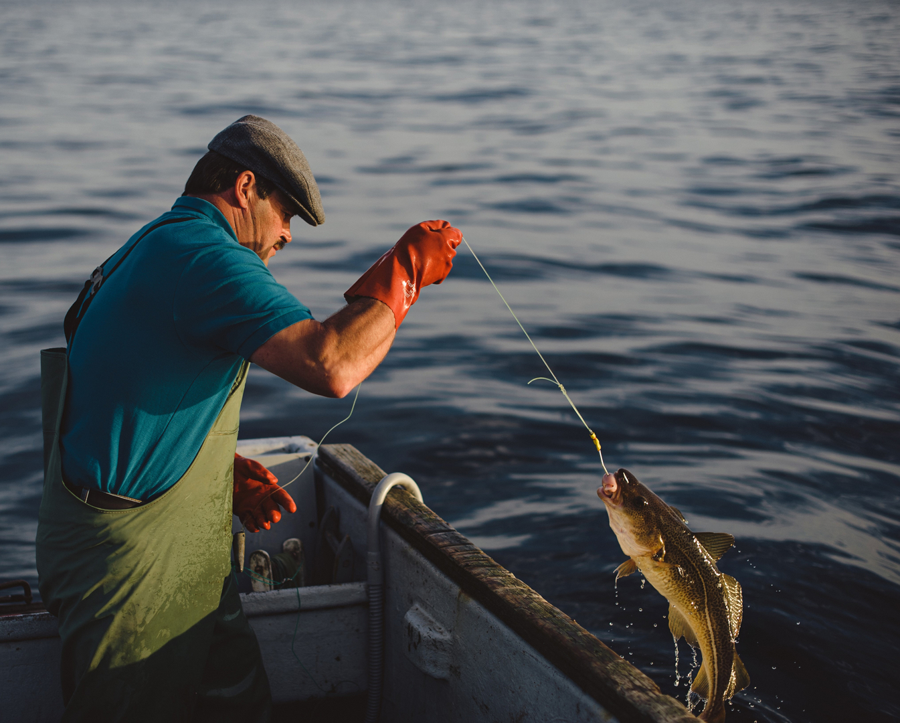
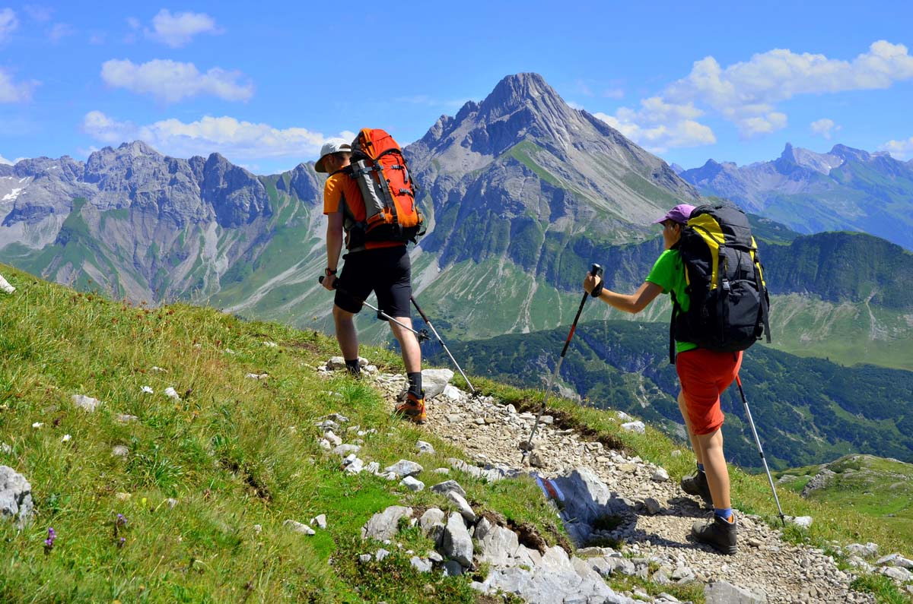
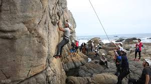
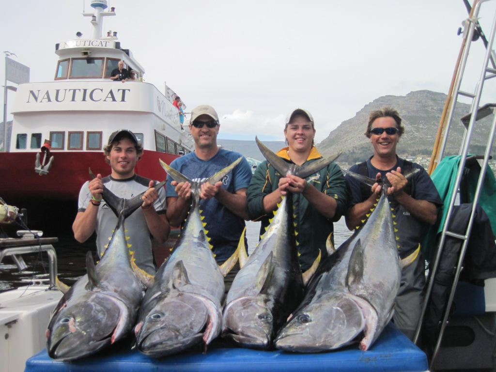
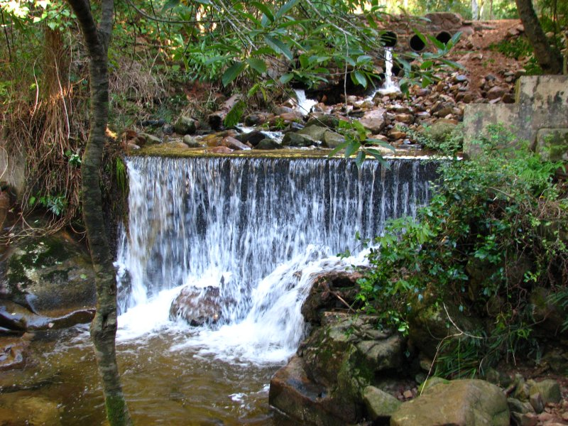
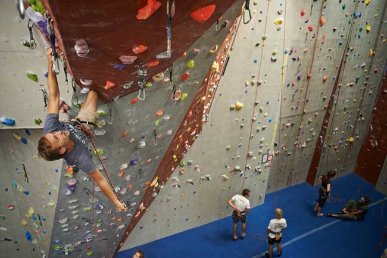

Outdoors Adventures
Camping

Fishing
Hiking
Rock climbing
Camping

SECRET FALLS.
Roughly 100 kilometres from Cape Town lies this tranquil campsite tucked in the Winterhoek Mountains. Here, there’s no shortage of peace, quiet and spectacular views.
Where is it Tulbagh
Distance from CT 1.5 hours
Activities This campsite has it’s own private spring-water swimming pool, so there’s loads of dipping to be had. Expect an abundance of fynbos, hiking trails, waterfalls and rockpools. And if you’re adventurous enough, go ziplining in nearby Ceres. Facilities Private braai areas with large table and benches. Communal ablutions with hot water. No electricity.
Dog-friendly yes (R70 per night)
Important Note Only accessible by 4x4s.
Cost R1 560 (entire campsite for up to 12 adults)
R2 340 (entire campsite for 13 to 18 adults)
R130 (adult per night)
R70 (child under 12 per night)
R70 (trailer per night)
Contact 082 393 4704, secretfalls@mweb.co.za
Location Winterhoek West, Tulbagh, Cape Town, Western cape
TIG Reviewer Alicia Chamaille
Fishing
The best fishing spots that are closest to Cape Town… In and around False Bay and the Cape Peninsula where you are likely to catch bluefin and yellowfin Tuna. In Rooikrans (or Rooikranz) you are likely to catch Blacktail, Hottentot, Kob (Kabeljou), Galjoen off the cliff ledges. Rooikrans is located on the Cape of Good Hope section of the Table Mountain National Park is located at the latitude and longitude coordinates of -34.1 and 23.416667. Rooikrans is regarded as the most famous & best fishing spots in South Africa and one of the best fishing spots in the World! In Kommetjie Bay expect the Cape snoek run in the winter season and you can catch white steenbras, stumpnose & galjoen off the rocks at Kommetjie but if you wish to fish off boats and really fight for your line, take a charter 30 nautical miles out from Kommetjie where you can enjoy some of the best deep-sea fishing grounds of the Cape Peninsula and these are home to tuna, albacore, black marlin and the fighting mako shark. Melkbosstrand is only about 30km from Cape Town and is an excellent spot for recreational fishing where you will find steenbras, kob and blacktail. Langebaan fishing trips can be arranged where one can enjoy lagoon fishing and ski-boat fishing which a great option for those wanting Black Marlin and the rare Broadbill which are also found here occasionally. Jacobs Bay or Bluewaterbay are all along the West Coast are also excellent options about 130-150km from Cape Town’s CBD. Jacobs Bay is especially safe and the perfect spot for family fishing and Bluewaterbay is a great place for less competitive fun fishing. The bay is also very well known for its sand sharks.
For freshwater anglers there are numerous dams close to Cape Town… Fischerhaven dam is loacted just outside of Hermans and is great for bass, rainbow trout fishing and carp. Theewaterskloof Dam is near Villersdorp on the N2 past Bot River about 120kms outside Cape Town for smallmouth bass, trout and carp. Clanwilliam Dam is about 230kms out of Cape Town on the N7 for large and smallmouth black bass.
Hiking
Newlands Forest
In the midst of the trees deep in the forest is a stone cottage that the woodcutter and his family live in (as well as their slave, this is the 1700s after all). Built by the Dutch East India Company this house in the woods is called Paradise. The master woodcutter is entrusted with the job of protecting the valuable timber resources of Table Mountain.
Fast forward to the end of the decade and Lady Anne Barnard is recording her brief stay in the stone cottage. This diary entry was passed down and over the years the cottage has become known as Lady Anne Barnyard’s Cottage despite her short stay there.
Avid hikers use the forest as an entry to the four unique trails that wind up the mountain. These trails range from easy to moderate, and boast several vantage points along the way that offer exquisite views stretching from the city centre to Blouberg.
Leisurely strollers entering the forest from the parking area will come across a sign with information detailing the various routes. The easier routes are made up of interlinking paths, with a few streams in between, and stunning views of the surrounding suburbs. Dogs are welcome as long as owners are carrying an activity permit otherwise they will be fined.
Rock climbing
CityROCK Observatory rocks
Get ready to rock at CityROCK indoor climbing gym in Cape Town. With hundreds of routes, overhanging climbing sections and over 450m² of climbing area, the indoor climbing gym is the largest of its kind in South Africa.
Strapped into a climbing harness with metres of vertical horizon before you, your first instinct is to keep both feet firmly on the ground. But once you’ve taken the first step up onto the first of many colourful landing spots that jut out from the ‘rock’ surface you feel a sense of power. An overwhelming determination to climb and keep climbing sets in and you’re off to reach your own personal summit.
Indoor climbing is sure to get your blood pumping and your muscles working. If you’re a novice climber, make sure you don’t make any plans that involve too much moving around in the days to come after your first climb.
After years of neglect, those climbing muscles will be stiff the next day and while at first you may be cursing your newfound love of heights, the adrenalin and sense of accomplishment after a climb will have you going back for more each week. Climbing is a popular form of rock climbing performed on artificial structures that, in a controlled environment, attempts to mimic the experience of real rock climbing. If you’re thinking of doing the real thing and climbing your way up Table Mountain, this is a great way to practice before you take the plunge. CityROCK in Cape Town has separate adult and kids bouldering caves, which ensure that all ages can climb comfortably at their own pace.
The indoor climbing arena in Cape Town also offers expert climbing advice, as well as introductory courses, outdoor courses, gear shop, yoga, corporate teambuilding, kids programs and birthday parties. The indoor climbing gym in Cape Town is open on Monday and Wednesday from 9am to 9pm, Fridays from 9am to 7pm and Saturdays and Sundays between 9am and 6pm. The centre is also open on public holidays from 10am to 6pm. An adult day pass will cost you R100, student day pass R80, and kids (under 18) day pass R75. Gear rental for the day will cost an additional R60. CityROCK 21 Anson Street (corner of Collingwood Road in Observatory) Cape Town